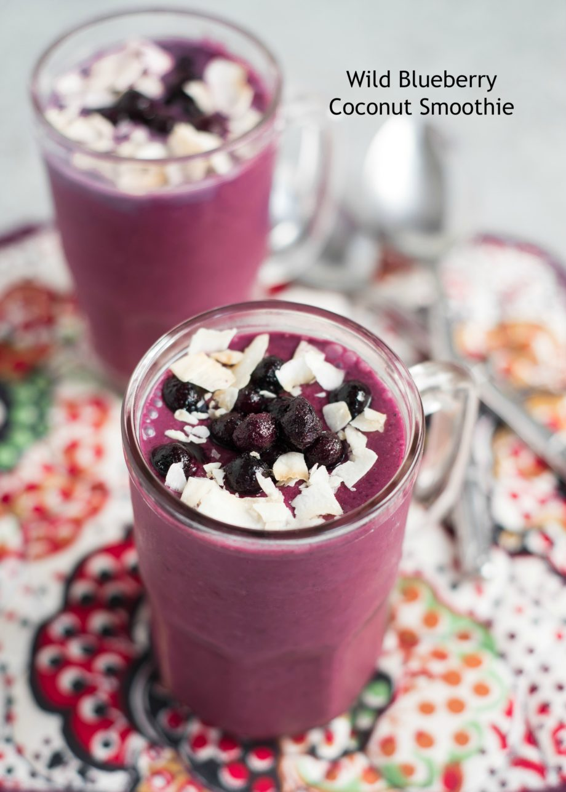
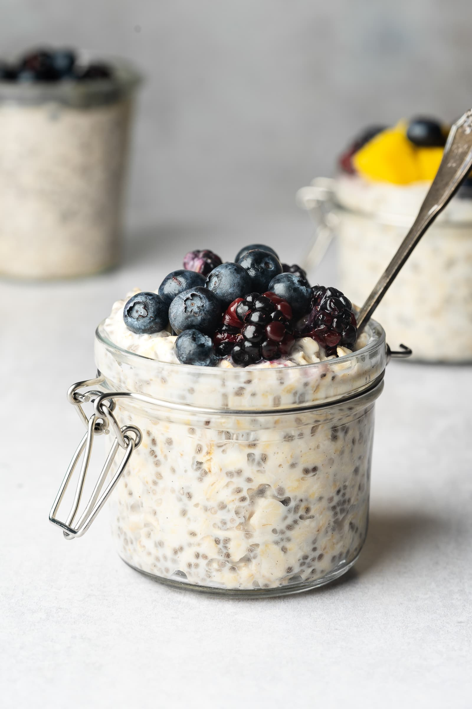

Healthy Recipes
Grilled Chicken Salad

Ingredients
- 2 (8-oz.) boneless, skinless chicken breasts
- 1 tsp. dried oregano
- 1 tsp. ground coriander
- Kosher salt & freshly ground black pepper
- 7 Tbsp. extra-virgin olive oil, divided
- 1/4 cup red wine vinegar
- 1 Tbsp. finely chopped fresh parsley
- 4 romaine hearts, chopped
- 3 Persian cucumbers, thinly sliced
- 2 avocados, thinly sliced
- 1 cup grape or cherry tomatoes, halved
- 1/2 cup halved pitted Kalamata olives
- 4 oz. feta, crumbled
Directions
- Prepare a grill for medium-high heat; preheat 5 minutes (or heat a grill pan). In a bowl, season chicken with oregano, coriander, salt, pepper, and 2 Tbsp. oil. Toss to coat.
- Grill chicken, covered, turning halfway, until slightly charred and cooked through (165°F), about 8 minutes per side. Rest 5 minutes, then slice thinly.
- In a small bowl, whisk vinegar, parsley, and remaining 5 Tbsp. oil. Season with salt and pepper.
- Divide lettuce, cucumbers, avocado, tomatoes, olives, and feta among bowls. Top with chicken, then drizzle with dressing.
Total Calories: ~550 kcal per serving
Blueberry Coconut Milk Smoothie
Ingredients
- 1/3 cup coconut milk, chilled (or almond milk)
- 1 banana, cut into chunks
- 1 cup blueberries (fresh or frozen)
- 1 cup ice
Instructions
- Add coconut milk, ice, blueberries, and banana to your blender.
- Blend on high speed until smooth.
- Serve immediately and enjoy!
Total Calories: ~220 kcal per serving
Overnight Oats With Yogurt
Ingredients
- 1/3 cup milk
- 1/4 cup Greek yogurt
- 1/4 cup rolled oats
- 2 tsp honey
- 2 tsp chia seeds
- 1/4 tsp ground cinnamon or more to taste
- 1/4 cup fresh blueberries
Directions
- Gather all ingredients.
- Combine milk, yogurt, oats, honey, chia seeds, and cinnamon in a 1/2-pint jar with a lid; cover and shake until combined.
- Fold in blueberries.
- Cover and refrigerate, 8 hours to overnight. Enjoy!
Total Calories: ~255 kcal per serving